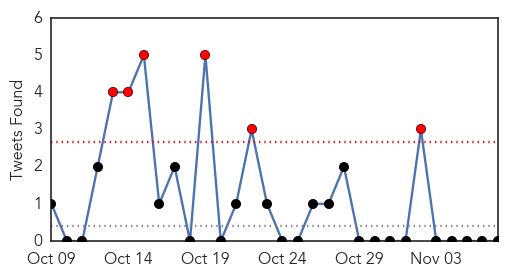

Cholera
30-Day Web Trend
4 alerts, 0 warnings
30-Day Twitter Trend
6 alerts, 0 warnings

Article Locations

Article Confidences

Top Articles:
- 0.998
- Kuwait denies rumors of cholera outbreak in country
- 0.996
- Kuwaiti Health Ministry denies rumors on cholera outbreak in country
- 0.996
- Iraq: amid fears cholera outbreak may worsen, UN agencies step up support to government-led response
- 0.995
- Health Ministry denies rumors on cholera outbreak
- 0.990
- KUNA : Only seven cholera-infected cases detected in Bahrain, cured
- 0.989
- Cholera risk from unreliable tap water supply
- 0.989
- Government declares end to cholera outbreak
- 0.988
- Concern over Iraq cholera outbreak prompts accelerated response
- 0.973
- Flooding may lead to worsening of cholera outbreak in Iraq: UNICEF
- 0.954
- Cholera in Kuwait? - Kuwait Times
- 0.863
- Reduce Dependency on Raw Material Exports, Imports – Experts
- 0.764
- Cholera spreads from Iraq to Syria, Kuwait, Bahrain: Unicef
- 0.692
- Heavy rains will worsen the Cholera epidemic in Iraq, Humanitarian agencies
- 0.549
- Victorian-Era diseases making a comeback in England -- Health & Wellness -- Sott.net
Top Tweets:
-
No tweets found for Nov 07, 2015
MERS
30-Day Web Trend
0 alerts, 0 warnings
30-Day Twitter Trend
4 alerts, 0 warnings
Article Locations

Article Confidences

Top Articles:
-
No articles found for Nov 07, 2015
Top Tweets:
-
No tweets found for Nov 07, 2015